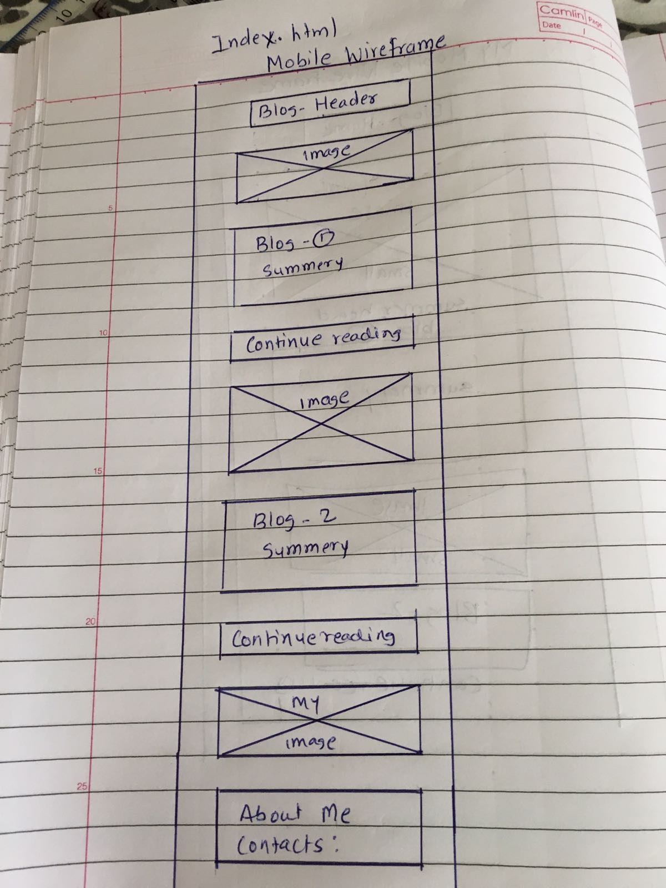
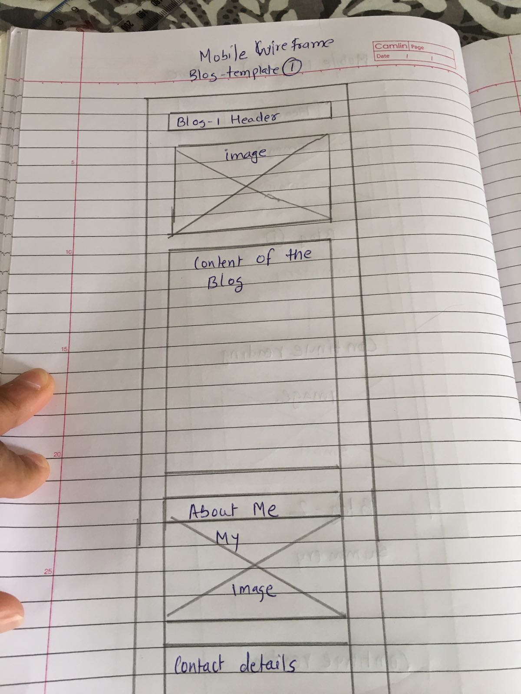
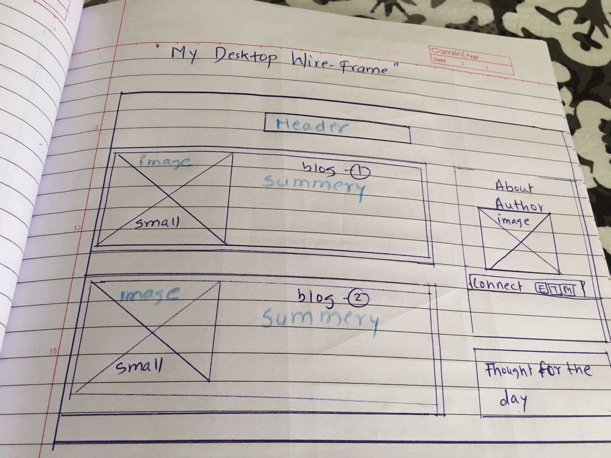
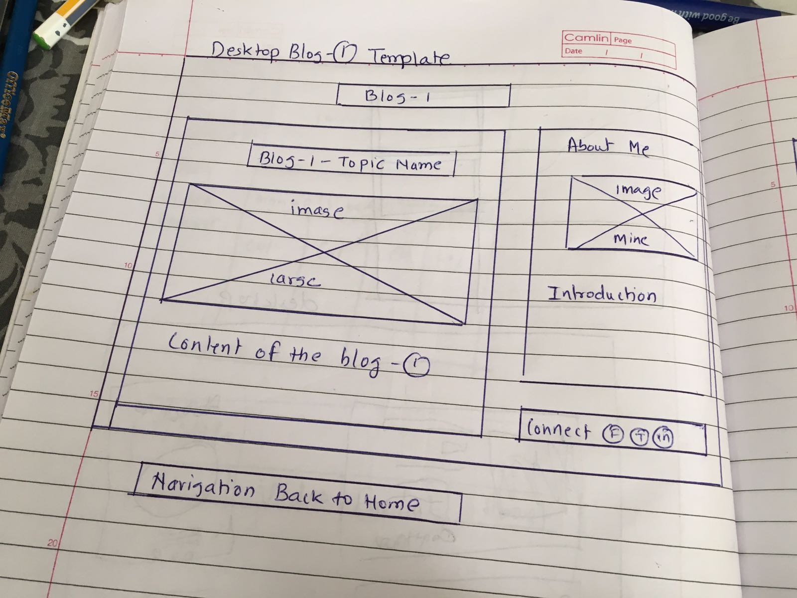

T3-design-to-web-blog.html
What a responsive site is, and why responsiveness is important.
Responsive site is the site which changes it's layout when accssesing on different devices.In other word, the goal is to provide an optimal viewing experience for all users, no matter what type of device they are using.
What mobile first design is, and why it's important.
For a long time, website design first focused on creating the most optimal user experience for the largest screen size a user would be on, such as a desktop screen. Designing for mobile first takes the idea of designing for the biggest possible screen first, and designing for the smallest possible screen first.
It is important because,If you want your users to have the best possible experience on mobile and desktop devices, designing for mobile first is the way to go. You won’t have to worry about there being mobile feature constraints, or slower loading times when using a mobile device. Finally, taking a mobile first design approach allows you to think about what actually needs to be on your site. Instead of trying to fill in all the whitespace, you focus on what the user actually wants/needs to complete the action. In order to maintain optimal functionality, you’ll work harder to make sure your site is full of only the most critical content and features necessary to help your business succeed.
What frameworks are, and their pros and cons.
Frameworks:Sometimes you when you think, why you need to do the same thing everyday when there’s a new bridge to shorten the path. Think of web frameworks as bridges that will help you code faster and easier. Frameworks provide set of tools which are available for you to use depending on your requirements and needs which will increase in your productivity.
Here are some pro's
- Efficiency
- Security
- Cost
- support
and Con's
- You learn the frameowrk not the language
- limitation
- code is public
What a wireframe is and why we use it.
A wireframe is commonly used to lay out content and functionality on a page which takes into account user needs and user journeys. Wireframes are used early in the development process to establish the basic structure of a page before visual design and content is added. Add and position your wireframe images from your username.github.io/images/ directory. This will be a 'content' image, so add it as an HTML element.
The aspects of your wireframes you found difficult to implement, and why.
when it came to implementing my wireframe design there were lot of challenges, It started from making two columns sit together next to each other in a one line, even after using DIV and Inline block. Then it came down to keeping the content inside those two boxs specially when I was trying to use media query. My third challenge was to use media query in a right order and make it work. Another challenge was to make sure my whole wireframe design matches with my site as I planned. It took long time to figure out some small small things. It was time consuming and I still know it's not perfect the way I would like it be.
- 
- 
- 
- 